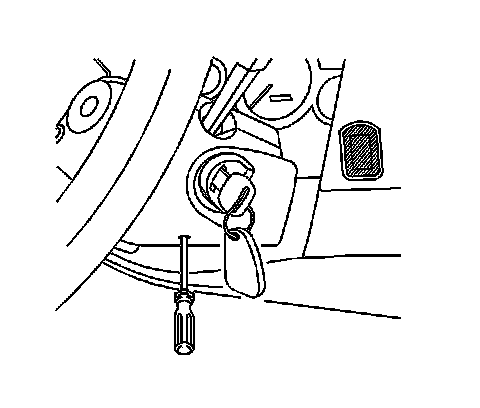
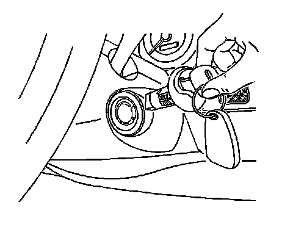

Ignition Lock Cylinder Replacement
Ignition Lock Cylinder Replacement
Removal Procedure

Caution: Refer to Battery Disconnect Caution .
1. Disconnect the negative battery cable. Refer to Battery Negative Cable Disconnection and Connection (LHD) (Service and Repair)Battery Negative Cable Disconnection and Connection (RHD) (Service and Repair) .
2. Turn the ignition switch to the START position.
3. Insert the awl into the lower steering column trim cover access hole.
4. Press in the release button using the awl.

5. Release the ignition switch to the RUN position.
6. Remove the ignition lock cylinder.
Installation Procedure
1. Install the ignition lock cylinder by doing the following procedure:
* Align the positioning locking tab slot on the lock module to the positioning tab on the ignition lock cylinder.
* Push the lock cylinder in until the locking tab locks in the lock module.
2. Connect the negative battery cable. Refer to Battery Negative Cable Disconnection and Connection (LHD) (Service and Repair)Battery Negative Cable Disconnection and Connection (RHD) (Service and Repair) .